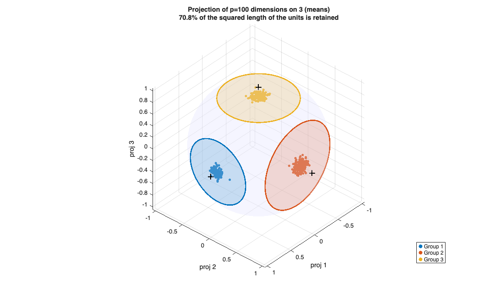
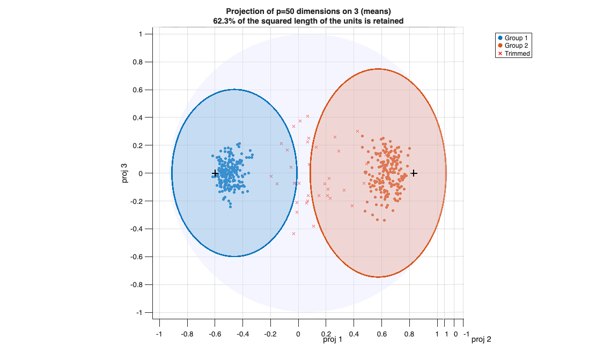
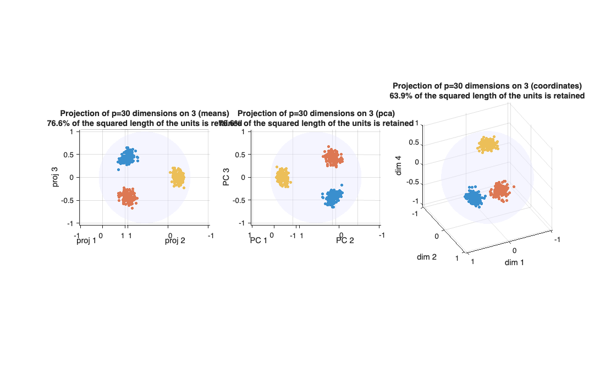

sphereprojplot
sphereprojplot plots high-dimensional directional data projected on a 3-dimensional spac
Syntax
Description
sphereprojplot is the counterpart of sphereplot for unit vectors in dimension p>3 (for example document embeddings, where p is in the hundreds). The data are projected orthogonally on a 3-dimensional linear subspace of R^p, chosen automatically or by the user, and the projections are drawn with sphereplot inside the unit sphere of that subspace.
This is a separate function because, differently from sphereplot, the plot is NOT an exact representation of the data, and it must be read in a different way:
1) an orthogonal projection shortens the vectors, so that the points lie inside the sphere and not on its surface. The squared distance of a point from the origin is the fraction of that unit which is "seen" in the chosen subspace; the average of this quantity is reported in the title of the plot and in the output (out.retained);
2) the within-group variability is spread over p-1 directions, of which only 2 are visible. The groups therefore look much tighter than they are;
3) the confidence regions are drawn as the projection of the p-dimensional caps (see "More About"): a circle on the sphere which delimits a flat disc. Units inside the cap are projected on the side of the disc which is opposite to the origin.
Output of tclustvmf in high dimension.hax
=sphereprojplot(Y,
Name, Value)
Examples
 Three vMF groups in dimension p=100.
Three vMF groups in dimension p=100.
Three vMF groups in dimension p=100.. The data are shown in the subspace of the three mean directions, with the projection of the 95 per cent caps.
rng(1)
p = 100; n = 200;
mu = zeros(3,p); mu(1,1) = 1; mu(2,2) = 1; mu(3,3) = 1;
kappa = [400; 200; 300];
Y = [vMFrnd(n, mu(1,:), kappa(1)); vMFrnd(n, mu(2,:), kappa(2)); vMFrnd(n, mu(3,:), kappa(3))];
group = [ones(n,1); 2*ones(n,1); 3*ones(n,1)];
sphereprojplot(Y, 'group', group, 'cap', struct('mu', mu, 'kappa', kappa));
Output of tclustvmf in high dimension.
Output of tclustvmf in high dimension.. Two groups and uniform contamination in dimension p=50. The plot uses the estimated mean directions and concentrations.
rng(2)
p = 50; n = 200;
mu1 = [1 zeros(1,p-1)]; mu2 = [0 1 zeros(1,p-2)];
Y = [vMFrnd(n, mu1, 150); vMFrnd(n, mu2, 80); vMFrnd(30, mu1, 0)];
out = tclustvmf(Y, 2, 0.08, 50, 'msg', 0);
[~, outproj] = sphereprojplot(Y, 'group', out.idx, ...
'cap', struct('mu', out.muopt, 'kappa', out.kappaopt));
fprintf('Squared length retained by the projection: %.1f%%\n', 100*outproj.retained);Squared length retained by the projection: 62.3%

Comparison of the projections.
Comparison of the projections.. The same data in the subspace of the means, in the subspace of the first 3 principal directions and in the subspace of 3 coordinates chosen by the user.
rng(3) p = 30; n = 150; mu = zeros(3,p); mu(1,1:2) = [1 1]; mu(2,2:3) = [1 -1]; mu(3,4) = 1; Y = [vMFrnd(n, mu(1,:), 100); vMFrnd(n, mu(2,:), 100); vMFrnd(n, mu(3,:), 100)]; group = [ones(n,1); 2*ones(n,1); 3*ones(n,1)]; figure sphereprojplot(Y, 'group', group, 'proj', 'means', 'h', subplot(1,3,1), 'legend', false); sphereprojplot(Y, 'group', group, 'proj', 'pca', 'h', subplot(1,3,2), 'legend', false); sphereprojplot(Y, 'group', group, 'proj', [1 2 4], 'h', subplot(1,3,3), 'legend', false);

Related Examples
Input Arguments
Output Arguments
More About
References
Mardia, K.V. and Jupp, P.E. (2000), Directional Statistics, Wiley, Chichester.
Kent, J.T. (1982), The Fisher-Bingham distribution on the sphere, J. Roy. Statist. Soc., B, Vol. 44, pp. 71-80.
See Also
sphereplot
|
tclustvmf
|
vMFrnd
|
vMFcap